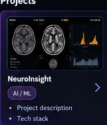
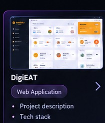
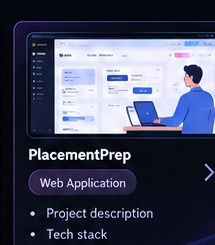

NeuroInsight
AI / MLBrain age prediction and Alzheimer’s disease classification project.
Python • PyTorchGitHub ↗Hi, It’s
I build web applications and AI-powered solutions to solve real world problems. I am an MCA graduate from FISAT under KTU. I have also done an internship at Zuike Infotech as a Python Django Web Application Developer and I am looking for developer roles.

Hi, I am Swetha Santhoshkumar. I build web applications and AI-powered solutions to solve real world problems. I am an MCA graduate from FISAT under KTU. I have also done an internship at Zuike Infotech as a Python Django Web Application Developer and I am looking for developer roles.

Brain age prediction and Alzheimer’s disease classification project.
Python • PyTorchGitHub ↗
Restaurant management application for managing food and operations.
MERN / DjangoGitHub ↗
Placement training platform with preparation and practice features.
MERN StackGitHub ↗Python Web Development Intern